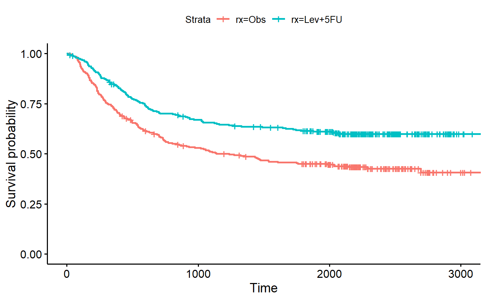
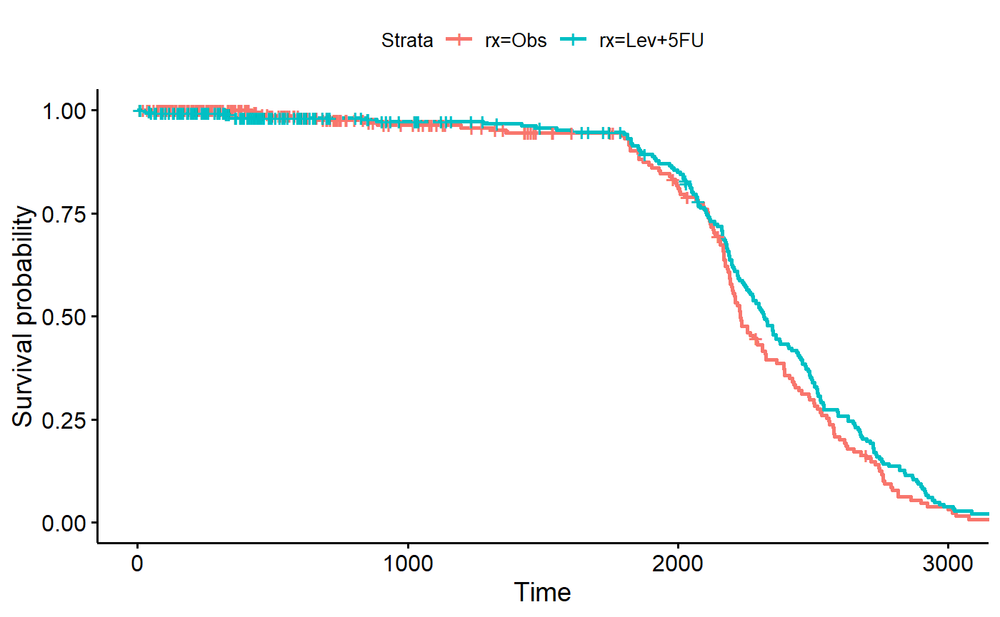
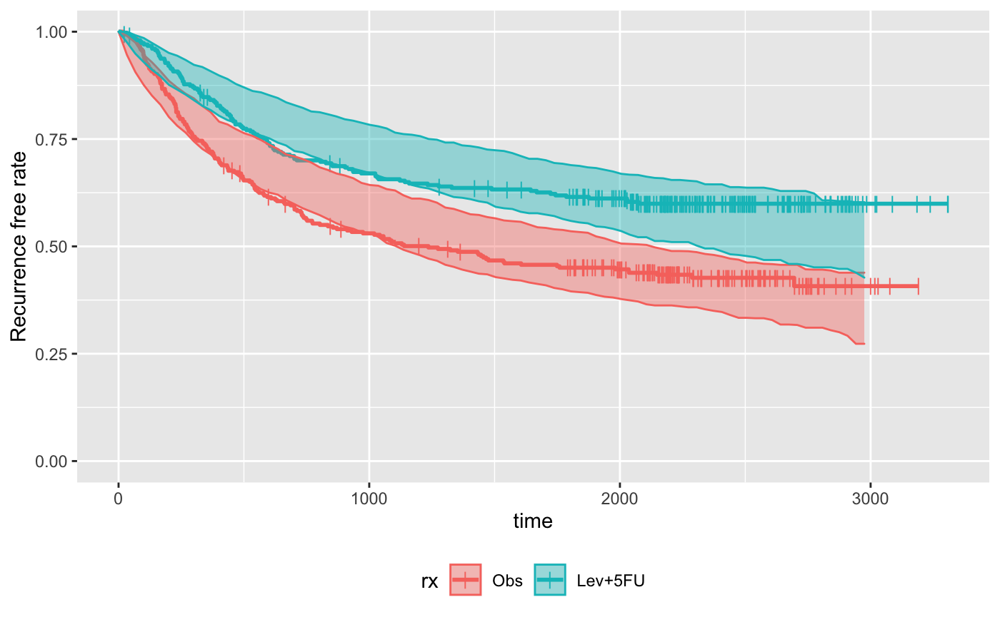
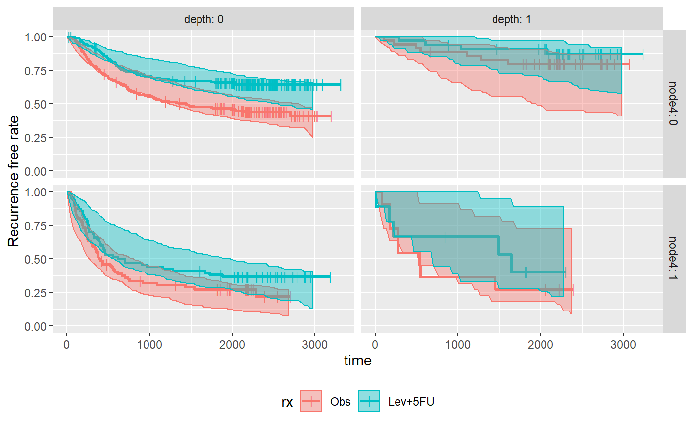
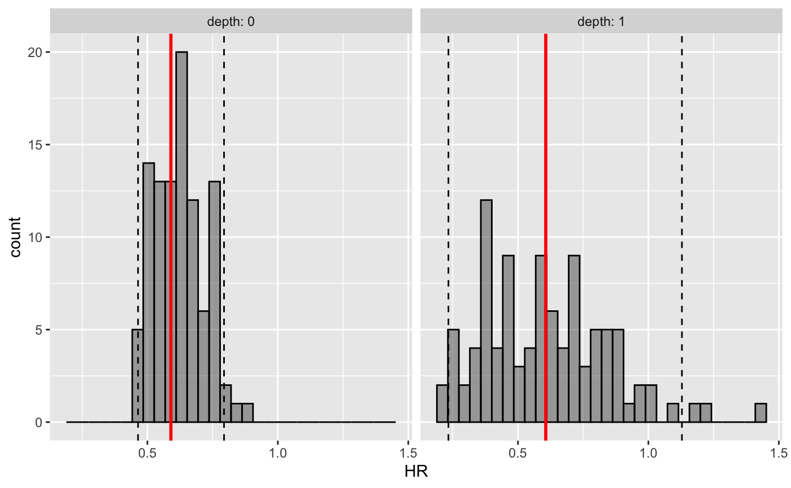

library(dplyr)
#> Warning: package 'dplyr' was built under R version 3.5.3
#>
#> Attaching package: 'dplyr'
#> The following objects are masked from 'package:stats':
#>
#> filter, lag
#> The following objects are masked from 'package:base':
#>
#> intersect, setdiff, setequal, union
library(ggplot2)
#> Warning: package 'ggplot2' was built under R version 3.5.3
library(survival)
#> Warning: package 'survival' was built under R version 3.5.3
library(survParamSim)
set.seed(12345)survreg() functionBefore running a parametric survival simulation, you need to fit a model to your data using survreg() function of survival package.
In this vignette, we will be using colon dataset available in survival package, where the treatment effect of adjuvant Levamisole+5-FU for colon cancer over placebo is evaluated.
First, we load the data and do some data wrangling.
# ref for dataset https://vincentarelbundock.github.io/Rdatasets/doc/survival/colon.html
colon2 <-
as_tibble(colon) %>%
# recurrence only and not including Lev alone arm
filter(rx != "Lev",
etype == 1) %>%
# Same definition as Lin et al, 1994
mutate(rx = factor(rx, levels = c("Obs", "Lev+5FU")),
depth = as.numeric(extent <= 2))Generating Kaplan-Meier curves for visually checking the data.
The second plot is looking at how many censoring we have over time.
Looks like we have a fairly uniform censoring between 1800 to 3000 days.
survfit.colon <- survfit(Surv(time, status) ~ rx, data = colon2)
survminer::ggsurvplot(survfit.colon)
survfit.colon.censor <- survfit(Surv(time, 1-status) ~ rx, data = colon2)
survminer::ggsurvplot(survfit.colon.censor)
Next we fit a lognormal parametric model for the data.
Here we are using node4 and depth as additional covariates in addition to treatment (rx).
You can see that all of the factor has strong association with the outcome.
fit.colon <- survreg(Surv(time, status) ~ rx + node4 + depth,
data = colon2, dist = "lognormal")
summary(fit.colon)
#>
#> Call:
#> survreg(formula = Surv(time, status) ~ rx + node4 + depth, data = colon2,
#> dist = "lognormal")
#> Value Std. Error z p
#> (Intercept) 7.5103 0.1343 55.92 < 2e-16
#> rxLev+5FU 0.7606 0.1677 4.54 5.7e-06
#> node4 -1.3474 0.1816 -7.42 1.2e-13
#> depth 1.1243 0.2661 4.22 2.4e-05
#> Log(scale) 0.6040 0.0461 13.10 < 2e-16
#>
#> Scale= 1.83
#>
#> Log Normal distribution
#> Loglik(model)= -2561.7 Loglik(intercept only)= -2607.6
#> Chisq= 91.8 on 3 degrees of freedom, p= 9e-20
#> Number of Newton-Raphson Iterations: 4
#> n= 619surv_param_sim() is the main function of the package that takes survreg object as described above.
It also require you to supply newdata, which is required even if it is not new - i.e. the same data was used for both survreg() and surv_param_sim().
What it does is: 1. Re-sample all the coefficients in the parametric survival model from variance-covariance matrix for n.rep times. 2. Perform survival time for all subjects in newdata with the corresponding covariates, using one of the resampled coefficients. Also generate censoring time according to censor.dur (if not NULL), and replace the simulated survival time above if censoring time is earlier. 4. Repeat the steps 2. for n.rep times.
sim <-
surv_param_sim(object = fit.colon, newdata = colon2,
# Simulate censoring according to the plot above
censor.dur = c(1800, 3000),
# Simulate only 100 times to make the example go fast
n.rep = 100)After the simulation is performed, you can either extract raw simulation results or further calculate Kaplan-Meier estimates or hazard ratio of treatment effect, as you see when you type sim in the console.
sim
#> ---- Simulated survival data with the following model ----
#> survreg(formula = Surv(time, status) ~ rx + node4 + depth, data = colon2,
#> dist = "lognormal")
#>
#> * Use `extract_sim()` function to extract individual simulated survivals
#> * Use `calc_km_pi()` function to get survival curves and median survival time
#> * Use `calc_hr_pi()` function to get hazard ratio
#>
#> * Settings:
#> #simulations: 100
#> #subjects: 619 (without NA in model variables)To calculate survival curves for each simulated dataset, calc_km_pi() can be used on the simulated object above.
km.pi <- calc_km_pi(sim, trt = "rx")
km.pi
#> ---- Simulated and observed (if calculated) survival curves ----
#> * Use `extract_median_surv()` to extract median survival times
#> * Use `extract_km_pi()` to extract prediction intervals of K-M curves
#> * Use `plot_km_pi()` to draw survival curves
#>
#> * Settings:
#> trt: rx
#> group: (NULL)
#> pi.range: 0.95
#> calc.obs: TRUESimilar to the raw simulated object, you can have a few options for further processing - one of them is plotting prediction intervals with plot_km_pi() function.
km.pi
#> ---- Simulated and observed (if calculated) survival curves ----
#> * Use `extract_median_surv()` to extract median survival times
#> * Use `extract_km_pi()` to extract prediction intervals of K-M curves
#> * Use `plot_km_pi()` to draw survival curves
#>
#> * Settings:
#> trt: rx
#> group: (NULL)
#> pi.range: 0.95
#> calc.obs: TRUE
plot_km_pi(km.pi) +
theme(legend.position = "bottom") +
labs(y = "Recurrence free rate") +
expand_limits(y = 0)
Plot can also be made for subgroups.
You can see that prediction interval is wide for (depth: 1 & nodes4: 1) group, mainly due to small number of subjects
km.pi <- calc_km_pi(sim, trt = "rx", group = c("node4", "depth"))
plot_km_pi(km.pi) +
theme(legend.position = "bottom") +
labs(y = "Recurrence free rate") +
expand_limits(y = 0)
To calculate prediction intervals of HRs, calc_hr_pi() can be used on the simulated object above. Here I only generated subgroups based on “depth”, since the very small N in (depth: 1 & nodes4: 1) can cause issue with calculating HRs.
hr.pi <- calc_hr_pi(sim, trt = "rx", group = c("depth"))
hr.pi
#> ---- Simulated and observed (if calculated) hazard ratio ----
#> * Use `extract_hr_pi()` to extract prediction intervals and observed HR
#> * Use `extract_hr()` to extract individual simulated HRs
#> * Use `plot_hr_pi()` to draw histogram of predicted HR
#>
#> * Settings:
#> trt: rx
#> (Lev+5FU as test trt, Obs as control)
#> group: depth
#> pi.range: 0.95
#> calc.obs: TRUE
plot_hr_pi(hr.pi)